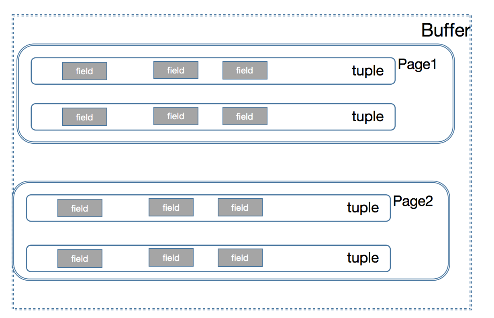

自己实现一个简单的DB
传统的RDBMS 在存储表格数据数据的时候,是以row 单位的,而row 的存储就是一个多元的tuple,
tuple 里面存储的就是我们每个字段 字段的值 (Filed name Filed Value),然后Field 它又是有类型的,对应到我们的字段就是int varchar 等各种类型 因此我们需要有一个共用的Field 接口
字段Field 的定义
public interface Field extends Serializable{ void serialize(DataOutputStream dos) throws IOException; public boolean compare(Predicate.Op op, Field value); public Type getType(); public int hashCode(); public boolean equals(Object field); public String toString(); }
|
Int类型的Field 的定义
public class IntField implements Field { private static final long serialVersionUID = 1L; private final int value; public int getValue() { return value; } public IntField(int i) { value = i; } public String toString() { return Integer.toString(value); } public int hashCode() { return value; } public boolean equals(Object field) { return ((IntField) field).value == value; } public void serialize(DataOutputStream dos) throws IOException { dos.writeInt(value); } public boolean compare(Predicate.Op op, Field val) { IntField iVal = (IntField) val; switch (op) { case EQUALS: return value == iVal.value; case NOT_EQUALS: return value != iVal.value; case GREATER_THAN: return value > iVal.value; case GREATER_THAN_OR_EQ: return value >= iVal.value; case LESS_THAN: return value < iVal.value; case LESS_THAN_OR_EQ: return value <= iVal.value; case LIKE: return value == iVal.value; } return false; } public Type getType() { return Type.INT_TYPE; } }
|
string 类型的Field 的定义
需要指定长度,对应数据库里面的varchar
public class StringField implements Field { private static final long serialVersionUID = 1L; private final String value; private final int maxSize; public String getValue() { return value; } public StringField(String s, int maxSize) { this.maxSize = maxSize; if (s.length() > maxSize) value = s.substring(0, maxSize); else value = s; } public String toString() { return value; } public int hashCode() { return value.hashCode(); } public boolean equals(Object field) { return ((StringField) field).value.equals(value); } public void serialize(DataOutputStream dos) throws IOException { String s = value; int overflow = maxSize - s.length(); if (overflow < 0) { String news = s.substring(0, maxSize); s = news; } dos.writeInt(s.length()); dos.writeBytes(s); while (overflow-- > 0) dos.write((byte) 0); } public boolean compare(Predicate.Op op, Field val) { StringField iVal = (StringField) val; int cmpVal = value.compareTo(iVal.value); switch (op) { case EQUALS: return cmpVal == 0; case NOT_EQUALS: return cmpVal != 0; case GREATER_THAN: return cmpVal > 0; case GREATER_THAN_OR_EQ: return cmpVal >= 0; case LESS_THAN: return cmpVal < 0; case LESS_THAN_OR_EQ: return cmpVal <= 0; case LIKE: return value.indexOf(iVal.value) >= 0; } return false; } public Type getType() { return Type.STRING_TYPE; } }
|
Field的反序列化
不同类型,反序列化是不一样的,我们目前仅仅只有int 和varchar,分别通过 INT_TYPE 和STRING_TYPE
public enum Type implements Serializable { INT_TYPE() { @Override public int getLen() { return 4; } @Override public Field parse(DataInputStream dis) throws ParseException { try { return new IntField(dis.readInt()); } catch (IOException e) { throw new ParseException("couldn't parse", 0); } } }, STRING_TYPE() { @Override public int getLen() { return STRING_LEN + 4; } @Override public Field parse(DataInputStream dis) throws ParseException { try { int strLen = dis.readInt(); byte bs[] = new byte[strLen]; dis.read(bs); dis.skipBytes(STRING_LEN - strLen); return new StringField(new String(bs), STRING_LEN); } catch (IOException e) { throw new ParseException("couldn't parse", 0); } } }; public static final int STRING_LEN = 128; public abstract int getLen(); public abstract Field parse(DataInputStream dis) throws ParseException; }
|
谓词Predicate
对应sql里面就是条件过滤的,我们在实现Field compare 的时候需要传入Predicate
public class Predicate implements Serializable { private static final long serialVersionUID = 1L; public enum Op implements Serializable { EQUALS, GREATER_THAN, LESS_THAN, LESS_THAN_OR_EQ, GREATER_THAN_OR_EQ, LIKE, NOT_EQUALS; public static Op getOp(int i) { return values()[i]; } public String toString() { if (this == EQUALS) return "="; if (this == GREATER_THAN) return ">"; if (this == LESS_THAN) return "<"; if (this == LESS_THAN_OR_EQ) return "<="; if (this == GREATER_THAN_OR_EQ) return ">="; if (this == LIKE) return "LIKE"; if (this == NOT_EQUALS) return "<>"; throw new IllegalStateException("impossible to reach here"); } } private final int field; private final Op op; private final Field operand; public Predicate(int field, Op op, Field operand) { this.field = field; this.op = op; this.operand = operand; } public int getField(){ return field; } public Op getOp(){ return op; } public Field getOperand(){ return operand; } public boolean filter(Tuple t) { return t.getField(field).compare(op, operand); } public String toString() { return ""; } }
|
单行row的定义
多个field 的组合构造成为一个tuple,就成为了我们rdbms里面的一行(row)
public class Tuple implements Serializable { private static final long serialVersionUID = 1L; private TupleDesc tupleDesc; private ArrayList<Field> tupleFields; private RecordId recordId; public Tuple(TupleDesc td) { resetTupleDesc(td); } public TupleDesc getTupleDesc() { return tupleDesc; } public RecordId getRecordId() { return recordId; } public void setRecordId(RecordId rid) { this.recordId = rid; } public void setField(int i, Field f) { tupleFields.set(i, f); } public Field getField(int i) { return tupleFields.get(i); } public String toString() { String column = new String(); for (int i = 0; i < tupleFields.size() - 1; i++) { column += tupleFields.get(i).toString() + "\t"; } column += tupleFields.get(tupleFields.size() - 1) + "\n"; return column; } public Iterator<Field> fields() { return tupleFields.iterator(); } public void resetTupleDesc(TupleDesc td) { this.tupleDesc = td; this.tupleFields = new ArrayList<Field>(td.numFields()); for (int i = 0; i < td.numFields(); i++) { this.tupleFields.add(null); } } }
|
数据表的schema
包括FieldName FieldType ,字段的name 和字段的名字这是最基础的,所以定义一个TDItem (tuple 的描述项)来单独描述
public static class TDItem implements Serializable { private static final long serialVersionUID = 1L; public final Type fieldType; public final String fieldName; public TDItem(Type t, String n) { this.fieldName = n; this.fieldType = t; } public String toString() { return fieldName + "(" + fieldType + ")"; } @Override public boolean equals(Object obj) { if (obj != null && obj instanceof TDItem) { return fieldType.equals(((TDItem) obj).fieldType); } return false; } }
|
每一个Row 是有多个field 的,所以需啊哟多个TDItem ,TupleDesc 是一个完整的schema
public class TupleDesc implements Serializable { private static final long serialVersionUID = 1L; private List<TDItem> items; public TupleDesc(Type[] typeAr, String[] fieldAr) { items = new ArrayList<TDItem>(typeAr.length); for (int i = 0; i < typeAr.length; i++) { items.add(new TDItem(typeAr[i], fieldAr[i])); } } public String getFieldName(int i) throws NoSuchElementException { if (i >= items.size()) { throw new NoSuchElementException(); } return items.get(i).fieldName; } public Type getFieldType(int i) throws NoSuchElementException { if (i >= items.size()) { throw new NoSuchElementException(); } return items.get(i).fieldType; } public int fieldNameToIndex(String name) throws NoSuchElementException { for (int i = 0; i < items.size(); i++) { String field = items.get(i).fieldName; if (field != null && field.equals(name)) { return i; } } throw new NoSuchElementException(); } public Iterator<TDItem> iterator() { return items.iterator(); } }
|
buffer 的存储结构
我们仅仅讨论单表的情况,以及数据接口实现上的层级定义,事务,lock 不在考虑范围之内,我们先从最简单的开始,然后慢慢的叠加,这才是一个事物的发展正常顺序规律

buffer 里面包含了很多的page,每一个page 里面包含了很多的tuple,每一个tuple 就是我们每一行的字段,因为我们每一账表的一行数据都会有多个,所以每一个tuple 就会有多个field
执行引擎,在获取数据的时候通过buffer 获取page,然后我们在通过page 获取我们对应的 tuple,最后得filter 我们想要的字段,这里需要注意的是就是buffer 里面没有的我们要获取的page 的时候,需要从disk 里面load 到buffer 里面
下面是整个流程需要的一些接口,这些接口后面我会去实现他,先有一个总体的认识
public class BufferPool { private static final int PAGE_SIZE = 4096; public static final int DEFAULT_PAGES = 50; private final int numPages; private ConcurrentHashMap<PageId, Page> bufferPool; public BufferPool(int numPages) { this.numPages = numPages; this.bufferPool = new ConcurrentHashMap(numPages); } public static int getPageSize() { return PAGE_SIZE; } public Page getPage(TransactionId tid, PageId pid, Permissions perm) throws TransactionAbortedException, DbException { if (bufferPool.containsKey(pid)) { return bufferPool.get(pid); } else { if (bufferPool.size() < numPages) { Page page =Database.getCatalog() .getDatabaseFile(pid.getTableId()) .readPage(pid); bufferPool.put(pid, page); return page; } else { throw new DbException("BufferPool: BufferPool is full"); } } } public void releasePage(TransactionId tid, PageId pid) { } public void transactionComplete(TransactionId tid) throws IOException{ } public boolean holdsLock(TransactionId tid, PageId p) { return false; } public void transactionComplete(TransactionId tid, boolean commit) throws IOException { } public void insertTuple(TransactionId tid, int tableId, Tuple t) throws DbException, IOException, TransactionAbortedException { } public void deleteTuple(TransactionId tid, Tuple t) throws DbException, TransactionAbortedException { } public synchronized void flushAllPages() throws IOException { } public synchronized void discardPage(PageId pid) { } private synchronized void flushPage(PageId pid) throws IOException { } public synchronized void flushPages(TransactionId tid) throws IOException { } private synchronized void evictPage() throws DbException { } }
|
BufferPool 这个在我们整个db 里面,是很重要,先把接口的签名先定义出来,其实对数据有点了解的话,这些方法理解起来也是和容易的,在后面在进行详细的说明
public interface DbFile { public Page readPage(PageId id); public void writePage(Page p) throws IOException; public ArrayList<Page> insertTuple(TransactionId tid, Tuple t) throws DbException, IOException, TransactionAbortedException; public Page deleteTuple(TransactionId tid, Tuple t) throws DbException, TransactionAbortedException; public DbFileIterator iterator(TransactionId tid); public int getId(); public TupleDesc getTupleDesc(); }
|
DbFile 负责就是持久化我们的数据,他的读写都是一个page 为单位的,当然不是他是真个db 都是以page 为单位,所以我们还需要描述page 的接口,为后面的B+tree Page Heap Page 做基础
public interface Page { public PageId getId(); public TransactionId isDirty(); public void markDirty(boolean dirty, TransactionId tid); public byte[] getPageData(); public Page getBeforeImage(); public void setBeforeImage(); }
|
pageId 作为一个单独一个interface,因为很多地方需要通过他来进行关联传递
public interface PageId { public int[] serialize(); public int getTableId(); public int hashCode(); public boolean equals(Object o); public int pageNumber(); }
|
以及我们还需要一个读取数据文件的iterator ,为后面的顺序读取,tuple 读取做准备
public interface DbIterator extends Serializable { public void open() throws DbException, TransactionAbortedException; public boolean hasNext() throws DbException, TransactionAbortedException; public Tuple next() throws DbException, TransactionAbortedException, NoSuchElementException; public void rewind() throws DbException, TransactionAbortedException; public TupleDesc getTupleDesc(); public void close(); }
|
后面会实现这些接口,先给一个大体框架